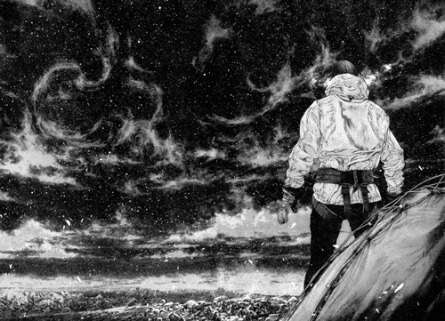
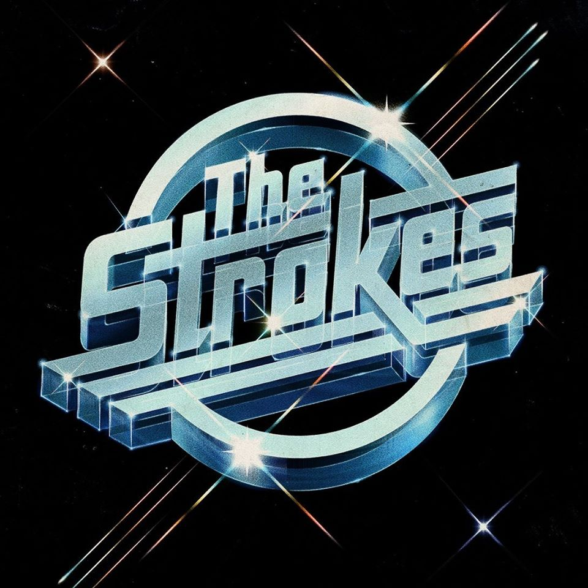
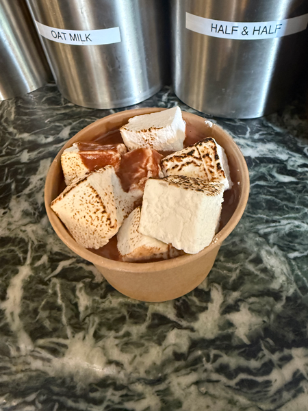

I love to climb, I am a huge fan of going with my friends or solo. It can be so fun to climb around and just be free like that.

I am a HUGE fan of the strokes, I went to their concert in NYC and it was so lit. all their albums are so good imo, check the ranking out.

This is just a picture of a hot chocolate I got in NYC, it was so cool and I love sweets like that. Also a huge coffee drinker and I believe in mocha supremacy - as evidenced by my love of hot chocolate.